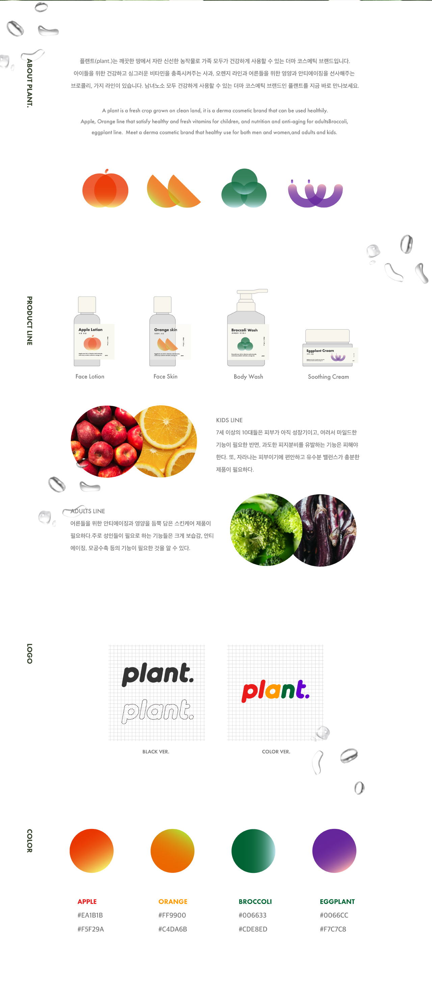
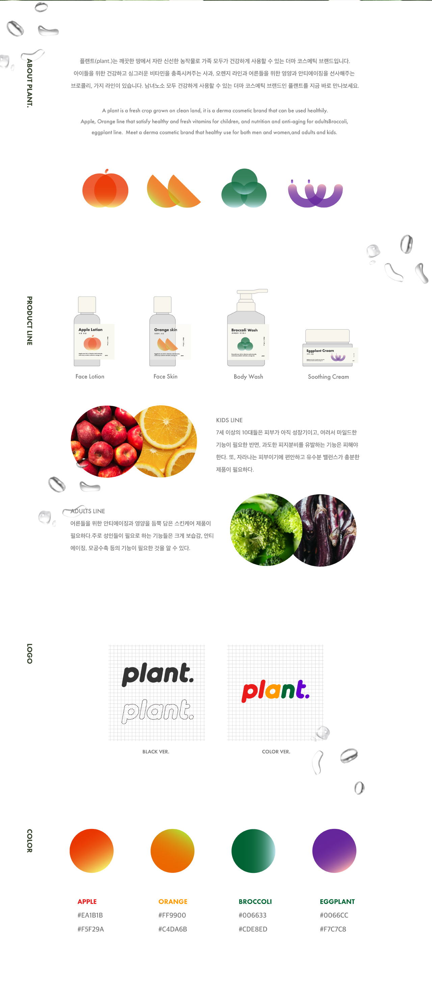

 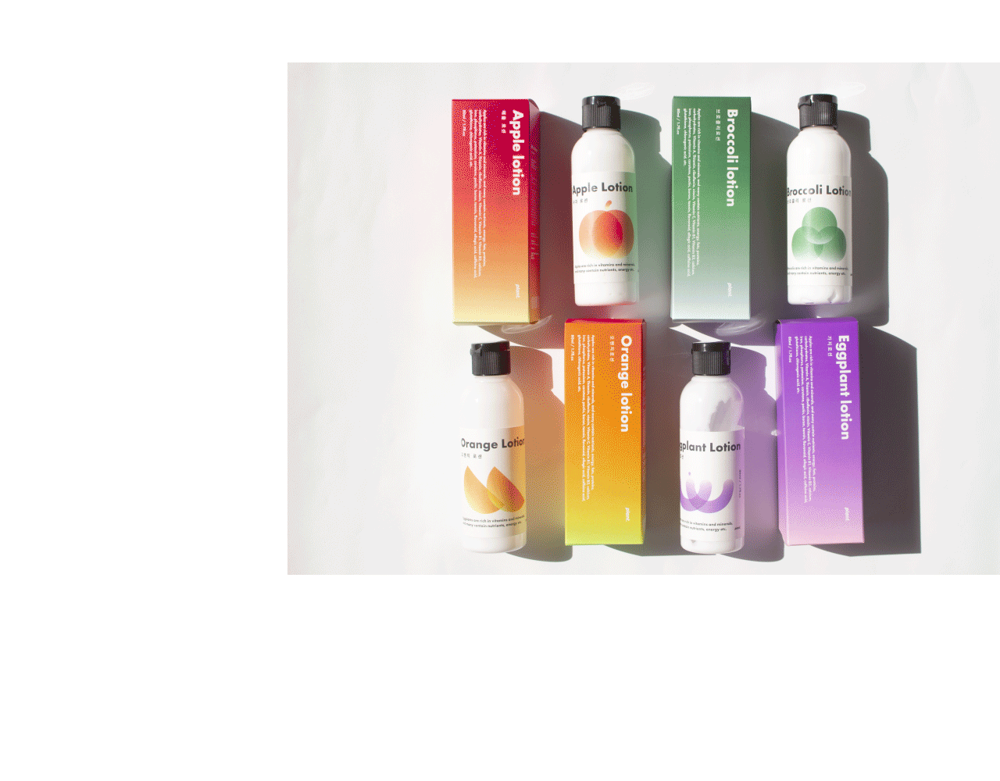
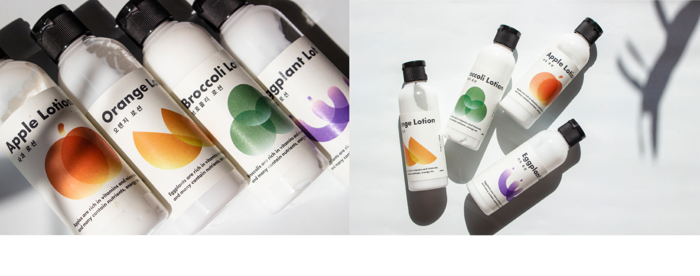
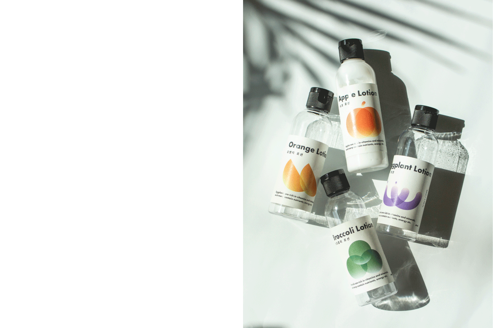
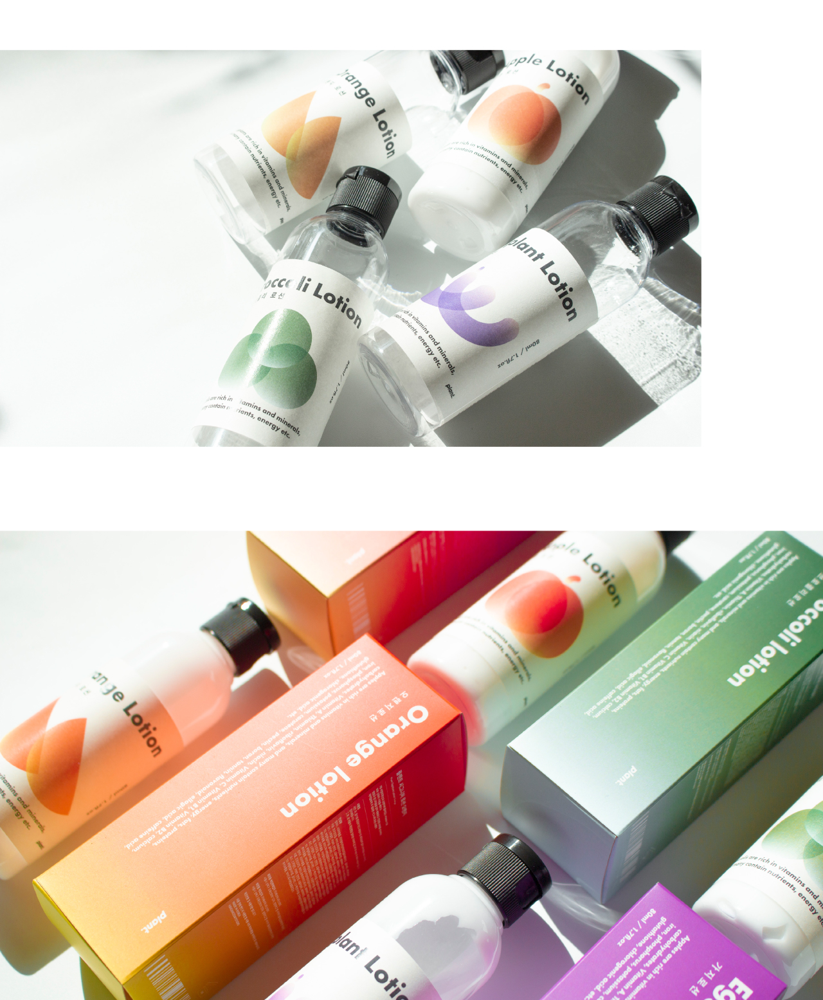
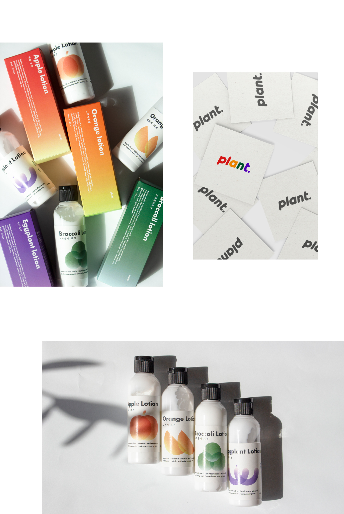
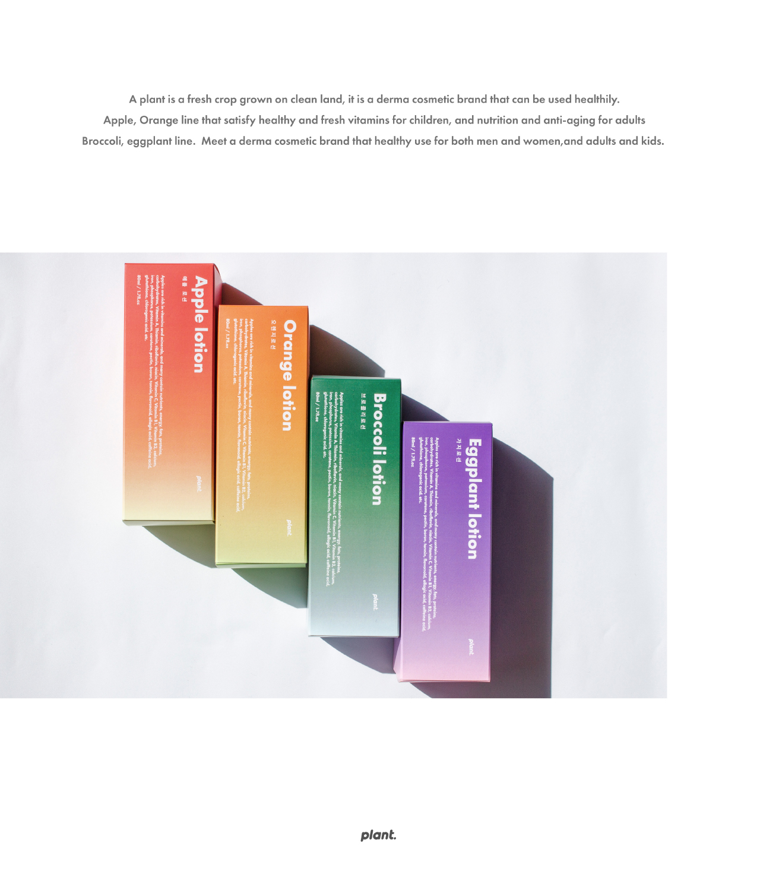
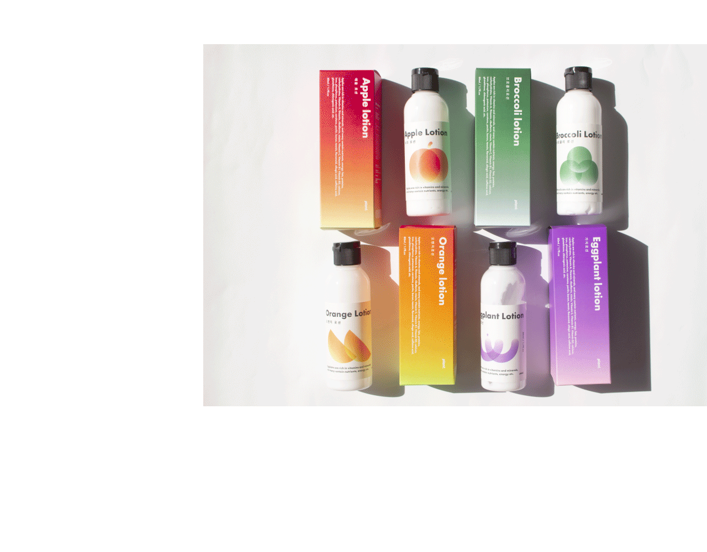
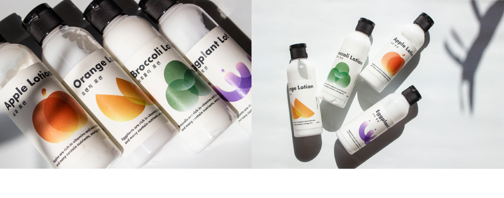
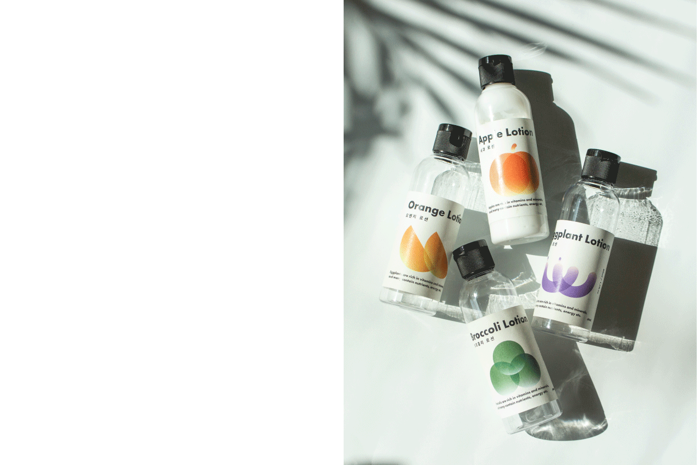
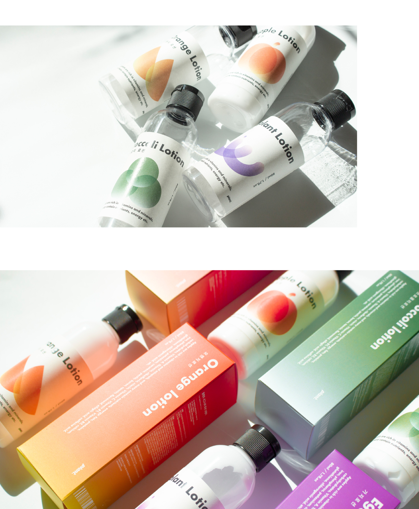
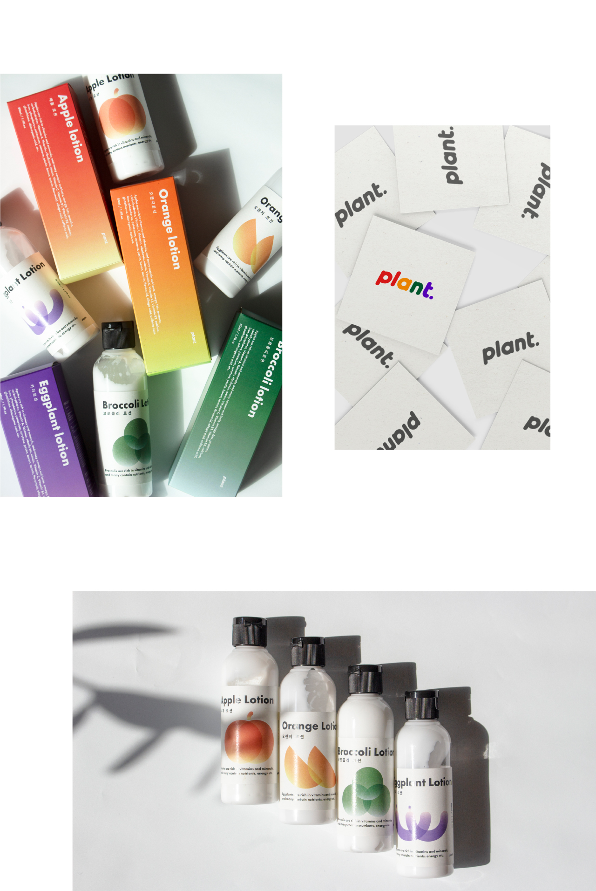
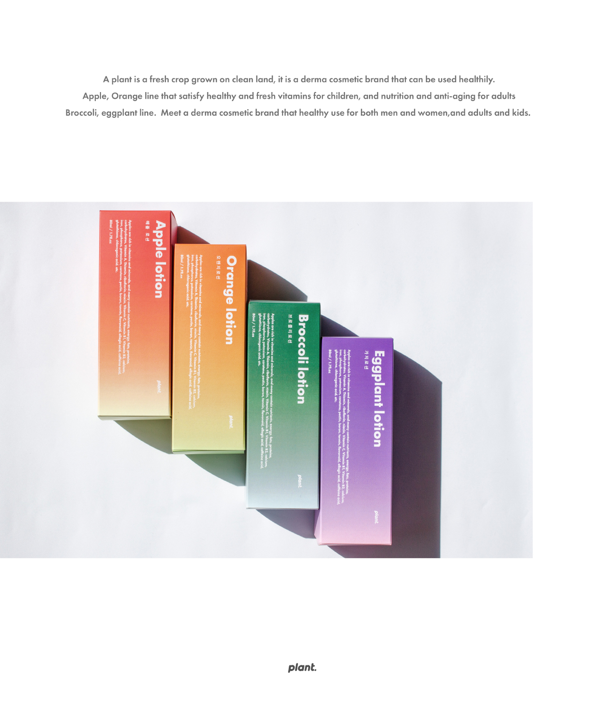
Plant.
오우송
https://www.instagram.com/haveaniceday._.studio/
플랜트(plant.)는 깨끗한 땅에서 자란 신선한 농작물로 가족 모두가 건강하게 사용할 수 있는 더마 코스메틱 브랜드입니다.
‹사과&오렌지›
아이들을 위한 건강하고 싱그러운 비타민을 충족시켜주는 라인
‹브로콜리&가지›
어른들을 위한 영양과 안티에이징을 선사해주는 라인
남녀노소 모두 건강하게 사용할 수 있는 더마 코스메틱 브랜드인 플랜트.
Plant. is a derma cosmetic brand that is carefully crafted from fresh crops grown in clean land and can be used healthily by the whole family.
‹Apple & Orange›
A line that satisfies healthy and fresh vitamins for children
‹Broccoli & Eggplant›
A line that provides nutrition and anti-aging for adults.
Plant, a derma cosmetic brand made from fresh fruits and vegetables that can be used healthily by the whole family.